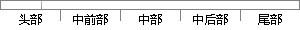

打开 NX 软件，新建一个建模模块，点击创建草图，在弹出的窗口点击确定如图1-1所示。
片段位置图

相似结果|
相似片段 1：模型组名称，打开模型组一双击模型管理窗口中模型组下的页名称，打开工作页一点击“算法”菜单中的“算法列表”选项，弹出“算法列表”对话框，如图4．2所示一双击选中的算法，弹出“创建模块窗口”，如图4．3所示，一输入模块名以及模块说明，按“确定”按钮，会在当前页生成该算法对应的模块。
|
※ 片段修改建议 ※
近似词参考：- 创建：建立 创立
- 确定：肯定
系统自动生成语句：打开 NX 软件，新建一个建模模块，点击建立草图，在弹出的窗口点击肯定如图1-1所示。
注：本片段修改建议为系统自动生成，仅供参考。